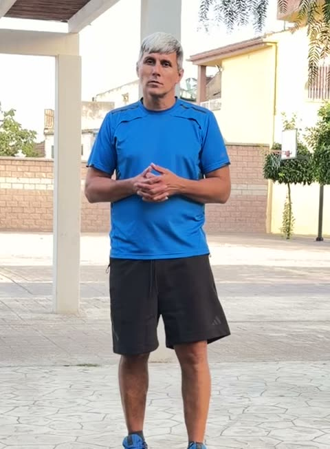

Футбол і легка атлетика, індивідуально та в мінігрупах. Дітям, які займаються будь-яким спортом, і тим, хто не займається жодним. Від 5 років і дорослі.Футбол и лёгкая атлетика, индивидуально и в мини-группах. Детям, которые занимаются любым спортом, и тем, кто не занимается никаким. От 5 лет и взрослые.
Гравець збірної України з футзалу, віцечемпіон Європи 2001 року. 15 років треную команди, був головним тренером професійного клубу. Тепер живу у Валенсії й беру учнів.Игрок сборной Украины по футзалу, вице-чемпион Европы 2001 года. 15 лет тренирую команды, был главным тренером профессионального клуба. Теперь живу в Валенсии и беру учеников.
Відео з реальних занять з дітьми й підлітками. Натисніть на будь-яке, щоб відкрити на весь екран.Видео с настоящих занятий с детьми и подростками. Нажмите на любое, чтобы открыть на весь экран.
Пояснює вправуОбъясняет упражнениемінігрупамини-группаСпершу показує самСначала показывает самскакалкаКоординаційна драбинаКоординационная лестницачастота крокучастота шагаСкакалкаритм і робота стопиритм и работа стопыЗміна напрямкуСмена направленияфішки, реакціяфишки, реакцияМінігрупаМини-группадіти одного вікудети одного возрастаПрийом м'ячаПриём мячапідлітки, полеподростки, полеРобота з м'ячемРабота с мячомпідлітки, полеподростки, поле
Головна різниця: він вимагаєГлавная разница: он требует
Година є година. Дитина прийшла — дитина працює.Час есть час. Ребёнок пришёл — ребёнок работает.
Тут заняття часто побудовані так, щоб дитині було весело. Це не погано, спорт треба любити. Але батьки бачать і другий бік: рік занять минув, а швидкості й техніки як не було, так і немає. Ніхто нічого не питає з дитини, тому дитина нічого й не дає.Здесь занятия часто построены так, чтобы ребёнку было весело. Это не плохо, спорт нужно любить. Но родители видят и вторую сторону: год занятий прошёл, а скорости и техники как не было, так и нет. Никто ничего с ребёнка не спрашивает, поэтому ребёнок ничего и не даёт.
Він працює інакше. Не кричить, а вимагає. Втомилася? Відпочила й продовжила. Не вийшло? Повторили ще раз, і ще, доки не вийде. Без «ну добре, наступного разу».Он работает иначе. Не кричит, а требует. Устала? Отдохнула и продолжила. Не получилось? Повторили ещё раз, и ещё, пока не получится. Без «ну ладно, в следующий раз».
У такому підході виросли ми з вами. Результат видно за місяць, і дитина сама помічає, що стала швидшою. Кращої мотивації не буває.В таком подходе выросли мы с вами. Результат виден за месяц, и ребёнок сам замечает, что стал быстрее. Лучшей мотивации не бывает.
Для тренування вистачить дитячого майданчика у дворі. Фішки й драбину тренер привозить сам.Для тренировки хватит детской площадки во дворе. Фишки и лестницу тренер привозит сам.
Кому це підходитьКому это подходит
Дитина займається іншим спортомРебёнок занимается другим спортом
Плавання, теніс, баскетбол, танці, гімнастика, єдиноборства. Швидкість, реакція, координація, стрибок і витривалість: це легка атлетика й ЗФП, і вони працюють однаково в будь-якому виді. Тренер вашої секції їх не ставить: у нього своя техніка й немає на це годин.Плавание, теннис, баскетбол, танцы, гимнастика, единоборства. Скорость, реакция, координация, прыжок и выносливость: это лёгкая атлетика и ОФП, и они работают одинаково в любом виде. Тренер вашей секции их не ставит: у него своя техника и нет на это часов.
Дитина не займається нічимРебёнок не занимается ничем
Тоді починаємо з тіла: постава, координація, витривалість, уміння володіти собою в русі. М'яч тут інструмент, а не мета. З ним дитині просто цікавіше, ніж рахувати присідання.Тогда начинаем с тела: осанка, координация, выносливость, умение владеть собой в движении. Мяч здесь инструмент, а не цель. С ним ребёнку просто интереснее, чем считать приседания.
Дитина грає у футболРебёнок играет в футбол
На командному тренуванні м'яча дістається на кілька хвилин. Тут година тільки з ним: перший дотик, удар, обидві ноги, робота на швидкості.На командной тренировке мяча достаётся на несколько минут. Здесь час только с ним: первое касание, удар, обе ноги, работа на скорости.
ДоросліВзрослые
Повернутися у форму без спортзалу. Аматорські матчі по вихідних, футзал, загальна підготовка після довгої перерви.Вернуться в форму без спортзала. Любительские матчи по выходным, футзал, общая подготовка после долгого перерыва.
Що саме буде на тренуванніЧто именно будет на тренировке
ТехнікаТехника
Перший дотик, ведення, обидві ноги, гра в тісноті. Це база футзалу, і на великому полі вона потім дає перевагу.Первое касание, ведение, обе ноги, игра в тесноте. Это база футзала, и на большом поле она потом даёт преимущество.
Удар
Постановка, сила, точність, різні положення тіла й різні дистанції.Постановка, сила, точность, разные положения тела и разные дистанции.
Легка атлетикаЛёгкая атлетика
Техніка бігу, старт, прискорення, стрибки, скакалка. Швидкість і витривалість під вік дитини, без перевантаження.Техника бега, старт, ускорение, прыжки, скакалка. Скорость и выносливость под возраст ребёнка, без перегрузки.
КоординаціяКоординация
Те, чого найбільше бракує дітям, які багато сидять. Помітно вже за місяць.То, чего больше всего не хватает детям, которые много сидят. Заметно уже через месяц.
МисленняМышление
Бачити варіант до того, як отримав м'яч. Цього не дають вправи «на конусах», це ставиться в грі.Видеть вариант до того, как получил мяч. Этого не дают упражнения «на конусах», это ставится в игре.
З підлітками працює на футбольному полі.С подростками работает на футбольном поле.
Без дисципліни результату немаєБез дисциплины результата нет
Віталій Чернишов, інтерв'юВиталий Чернышев, интервьюfutsalua.org
Коротко про шляхКоротко о пути

Віталій Олександрович ЧернишовВиталий Александрович ЧернышевМайстер спорту міжнародного класу з футзалуМастер спорта международного класса по футзалу
«Інтеркас», Київ. Чемпіон України 1999 і 2000, володар Кубка України 2000 і 2001.«Интеркас», Киев. Чемпион Украины 1999 и 2000, обладатель Кубка Украины 2000 и 2001.
1998 · 2001 · 2002
Срібло чемпіонату УкраїниСеребро чемпионата Украины
2001
Фінал чемпіонату Європи, Москва. Збірна України поступилася у фіналі Іспанії й повезла додому срібло.Финал чемпионата Европы, Москва. Сборная Украины уступила в финале Испании и увезла домой серебро.
2002 — 2008
«Універ-ЕХО» і «Локомотив», Харків.«Универ-ЭХО» и «Локомотив», Харьков.
2009
Асистент головного тренера МФК «Моноліт», Харків. Веде другу команду клубу.Ассистент главного тренера МФК «Монолит», Харьков. Ведёт вторую команду клуба.
2011 — 2014
Головний тренер МФК «Моноліт», Харків.Главный тренер МФК «Монолит», Харьков.
2014 — 2025
Тренерська робота з командами.Тренерская работа с командами.
2026
Валенсія. Індивідуальні тренування й мінігрупи з футболу та легкої атлетики.Валенсия. Индивидуальные тренировки и мини-группы по футболу и лёгкой атлетике.
Формати і цінаФорматы и цена
Перше заняття45–60 хвилин, без зобов'язаньПервое занятие45–60 минут, без обязательств
безкоштовнобесплатно
Індивідуальноодна дитина або дорослийИндивидуальноодин ребёнок или взрослый
30 € / годчас
Удвохдруг, брат, сестраВдвоёмдруг, брат, сестра
20 € / з кожногос каждого
Мінігрупа 3–5один рівень, один вік · місце в групі за місяць напередМини-группа 3–5один уровень, один возраст · место в группе за месяц вперёд
15 € / з кожногос каждого
Абонемент 8 занятьіндивідуально, дійсний 2 місяціАбонемент 8 занятийиндивидуально, действует 2 месяца
220 €
Приїжджаю у ваш район Валенсії, доплати за дорогу немає. Тренуємось на муніципальних полях, у парках або на майданчику біля вашого дому. М'ячі, фішки, координаційна драбина мої.Приезжаю в ваш район Валенсии, доплаты за дорогу нет. Тренируемся на муниципальных полях, в парках или на площадке возле вашего дома. Мячи, фишки, координационная лестница мои.
Як це працює на практиціКак это работает на практике
Розклад фіксованийРасписание фиксированное
Той самий день і та сама година щотижня. Так у дитини складається звичка, а не «як вийде».Тот же день и тот же час каждую неделю. Так у ребёнка складывается привычка, а не «как получится».
Не можете на індивідуальне? Попередьте за 12 годинНе можете на индивидуальное? Предупредите за 12 часов
Перенесемо без питань і без доплат. Пізніше заняття вважається проведеним: це не штраф, це година, яку я вже не встиг віддати комусь іншому.Перенесём без вопросов и без доплат. Позже занятие считается проведённым: это не штраф, это час, который я уже не успел отдать кому-то другому.
Мінігрупа йде за розкладом завждиМини-группа идёт по расписанию всегда
Незалежно від того, скільки дітей прийшло. Ви оплачуєте місце в групі, а не відвідування, тому пропущене заняття не переноситься. Один пропуск на місяць можна відпрацювати на індивідуальному зі знижкою, якщо є вікно.Независимо от того, сколько детей пришло. Вы оплачиваете место в группе, а не посещения, поэтому пропущенное занятие не переносится. Один пропуск в месяц можно отработать на индивидуальном со скидкой, если есть окно.
Хвороба або травмаБолезнь или травма
Ставимо абонемент на паузу, нічого не згорає. Скажіть як є, довідок я не питаю.Ставим абонемент на паузу, ничего не сгорает. Скажите как есть, справок я не спрашиваю.
ДощДождь
Рішення приймаю за дві години до початку й пишу всім. Це перенос, а не скасування.Решение принимаю за два часа до начала и пишу всем. Это перенос, а не отмена.
ОплатаОплата
Готівкою на занятті або Bizum. За мінігрупу за місяць наперед: інакше група не тримається й розпадається на другому тижні.Наличными на занятии или Bizum. За мини-группу за месяц вперёд: иначе группа не держится и разваливается на второй неделе.
Питання, які ставлять першимиВопросы, которые задают первыми
Якою мовою тренування?На каком языке тренировки?
Українською або російською, як вам зручніше. Іспанську вивчаю, але для роботи з вашою дитиною вона не потрібна.На украинском или русском, как вам удобнее. Испанский учу, но для работы с вашим ребёнком он не нужен.
З якого віку берете?С какого возраста берёте?
Від 5 років. Верхньої межі немає, працюю і з дорослими.С 5 лет. Верхней границы нет, работаю и со взрослыми.
Дитина ніколи не грала у футбол. Є сенс?Ребёнок никогда не играл в футбол. Есть смысл?
Так. Половина роботи — легка атлетика й загальна фізпідготовка, і вона однаково потрібна тим, хто ходить на плавання, танці, теніс або взагалі нікуди. Футбол просто робить її нескучною.Да. Половина работы — лёгкая атлетика и общая физподготовка, и она одинаково нужна тем, кто ходит на плавание, танцы, теннис или вообще никуда. Футбол просто делает её нескучной.
Він не кричатиме на дитину?Он не будет кричать на ребёнка?
Ні. Вимогливість і крик — різні речі, і друге ознака того, що тренер не володіє першим. Він двадцять років грав на рівні, де кричати марно: там працює тільки повторення й спокійна вимога. Прийдіть на перше заняття й подивіться самі, воно для цього й безкоштовне.Нет. Требовательность и крик — разные вещи, и второе признак того, что тренер не владеет первым. Он двадцать лет играл на уровне, где кричать бесполезно: там работает только повторение и спокойное требование. Придите на первое занятие и посмотрите сами, оно для этого и бесплатное.
Скільки разів на тиждень?Сколько раз в неделю?
Двох достатньо, щоб побачити зміну за місяць. Один раз теж працює, просто повільніше.Двух достаточно, чтобы увидеть изменение за месяц. Один раз тоже работает, просто медленнее.
Що взяти із собою?Что взять с собой?
Спортивну форму, кросівки або бутси, воду. Решту привожу я.Спортивную форму, кроссовки или бутсы, воду. Остальное привожу я.
А якщо не піде?А если не пойдёт?
Перше заняття безкоштовне саме для цього. Передоплат і зобов'язань немає, платите за заняття, які відбулися.Первое занятие бесплатное именно для этого. Предоплат и обязательств нет, платите за занятия, которые состоялись.
Напишіть, домовимось про часНапишите, договоримся о времени
Скажіть вік дитини, ваш район і коли вам зручно. Перше заняття підберемо на цьому ж тижні.Скажите возраст ребёнка, ваш район и когда вам удобно. Первое занятие подберём на этой же неделе.